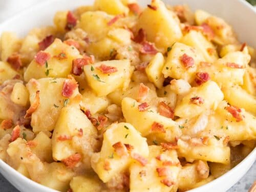

Oma's Potato Salad

Description
Oma's potato salad is a simple, vinegar-based dish that reminds me of home. The most important finishing ingredients are bacon bits and chives.
Ingredients
- gold potatoes
- Essex vinegar
- white onion
- bacon bits
- chives
- beef bouillon cube
- salt and pepper
Steps
- Boil gold potatoes until tender enough to peel, about 30 minutes.
- Meanwhile, finely dice one half of white onion.
- Boil a small amount of water and dissolve beef bouillon cube into boiling water.
- Add approximately 2 tablespoons of Essex vinegar to boiling water.
- Taste sauce, add additional vinegar or water to taste.
- Add salt and pepper to taste.
- Drain gold potatoes and peel.
- Slice gold potatoes into bite size chunks; pour sauce over potatoes in bowl.
- Add bacon bits and chives to taste right before serving.
- Refrigerate leftovers (if you have any!)